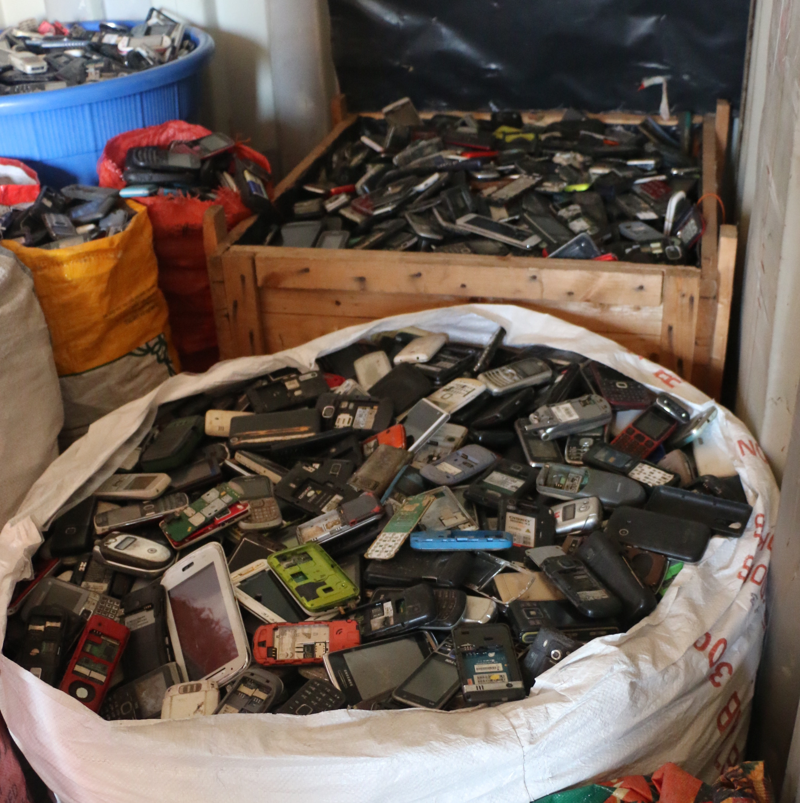
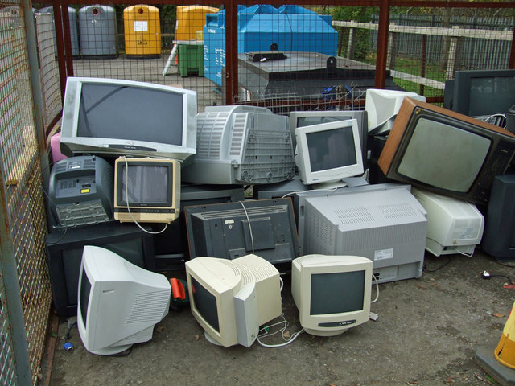
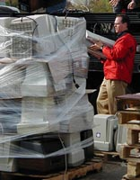

E-waste is any electrical or electronic equipment that’s been discarded. This includes working and broken items that are thrown in the garbage or donated to a charity reseller like Goodwill. Often, if the item goes unsold in the store, it will be thrown away.

E-waste is considered the "fastest-growing waste stream in the world" with 44.7 million tonnes generated in 2016- equivalent to 4500 Eiffel towers. In 2018, an estimated 50 million tonnes of e-waste was reported, thus the name ‘tsunami of e-waste’ given by the UN. Its value is at least $62.5 billion annually.

A recent study about the rising electronic pollution in the USA revealed that the average computer screen has five to eight pounds or more of lead representing 40 percent of all the lead in US landfills. All these toxins are persistent, bioaccumulative toxins (PBTs) that create environmental and health risks when computers are incinerated, put in landfills or melted down. The emission of fumes, gases, and particulate matter into the air, the discharge of liquid waste into water and drainage systems, and the disposal of hazardous wastes contribute to environmental degradation. The processes of dismantling and disposing of electronic waste in developing countries led to a number of environmental impacts as illustrated in the graphic. Liquid and atmospheric releases end up in bodies of water, groundwater, soil, and air and therefore in land and sea animals – both domesticated and wild, in crops eaten by both animals and human, and in drinking water.

Proper recycling and disposal of electronics is not only important for the environment but it also has a big impact on data security as well. It's quite easy for anyone to extract personal data from electronic devices. Dragging your important documents to the Recycling Bin won't be enough to keep your data secure. That's because digital information often leaves a trail of breadcrumbs that can be recovered effortlessly using the right hardware

Recycling is an essential element of e-waste management. Properly carried out, it should greatly reduce the leakage of toxic materials into the environment and militate against the exhaustion of natural resources. However, it does need to be encouraged by local authorities and through community education. Less than 20% of e-waste is formally recycled, with 80% either ending up in landfill or being informally recycled – much of it by hand in developing countries, exposing workers to hazardous and carcinogenic substances such as mercury, lead and cadmium.